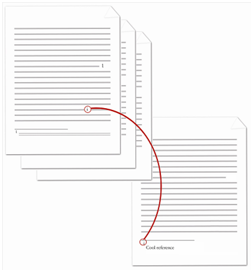

[Table of Contents] [docx version]
WordprocessingML Reference Material - Table of Contents
endnoteReference (Endnote Reference)
This element specifies the presence of an endnote reference. An endnote reference is a run of automatically numbered text which references a particular endnote within the parent document, and inherits the endnote reference mark's numbering.
If an endnote reference is specified within a footnote or endnote, then the document shall be considered non-conformant.
[Example: Consider the following document where some text is referenced by an endnote at the end of the document:

The endnote reference is the lower case roman numeral within the document content in the diagram above. The contents of the paragraph which contains the endnote reference are represented by the following WordprocessingML:
<w:p>
<w:r>
<w:t>This text is followed by an endnote</w:t>
</w:r>
<w:r>
<w:rPr>
<w:rStyle w:val="EndnoteReference" />
</w:rPr>
<w:endnoteReference w:id="2" />
</w:r>
<w:r>
<w:t>.</w:t>
</w:r>
</w:p>
The resulting paragraph contains the literal text content of This text is followed by an endnote, followed by an automatically numbered endnote reference. Since this is the first endnote in the document, that automatically numbered reference inherits the lower case roman numeral i from the endnote reference mark. end example]
|
Parent Elements |
|
Attributes |
Description |
|
customMarkFollows (Suppress Footnote/Endnote Reference Mark) |
Specifies that the current footnote or endnote shall not have an associated footnote or endnote reference mark, as appropriate.
This attribute shall be used to specify that a particular footnote or endnote shall not increment the numbering for its associated footnote/endnote numbering format, so that the use of a footnote with a custom footnote mark does not cause a missing value in the footnote/endnote values. The display of the mark is specified via the footnoteRef/endnoteRef elements, as appropriate.
If this attribute is omitted, then the footnote or endnote reference mark shall not be skipped when incrementing over this footnote or endnote.
[Example: Consider a footnote with an id value of 1 that uses a custom footnote mark:
<w:footnotes> … </w:footnote> <w:footnote w:suppressRef="1" w:id="2"> … </w:footnote> … </w:footnote> </w:footnotes>
If the numbering format for footnotes in this document is upperRoman, then the first footnote shall be I, the second is suppressed, and the third is II, noticing that the second does not increment the numbering sequence. end example]
The possible values for this attribute are defined by the ST_OnOff simple type (§2.18.67). |
|
id (Footnote/Endnote ID Reference) |
Specifies the footnote or endnote which is being referenced by the current footnote or endnote reference in the document.
If the resulting footnote or endnote ID is not present in the footnotes or endnote part (as appropriate), then this document shall be considered non-conformant.
[Example: Consider a paragraph with an endnote reference, represented by the following WordprocessingML:
<w:p>
This text references the endnote in the document's endnotes part which has an id value of 2. end example]
The possible values for this attribute are defined by the ST_DecimalNumber simple type (§2.18.16). |
The following XML Schema fragment defines the contents of this element:
<complexType name="CT_FtnEdnRef">
<attribute name="customMarkFollows" type="ST_OnOff" use="optional"/>
<attribute name="id" use="required" type="ST_DecimalNumber"/>
</complexType>